《基于知识图谱与BERT算法的实时动态匹配的线上个性化学习系统研究——以百科园为例》
———第三十五届“博文杯”大学生实证创新基金项目结项
该项目基于知识图谱和BERT算法，通过实时捕捉学生的学习知识情况，根据学生的知识点掌握水平， 并结合知识点间的相关度推荐出适合其知识掌握水平难度的试题来解决知识漏洞问题； 作为主要成员，我运用多学科知识交叉融合，整理撰写了项目创新突破点、用户数据动态收集部分以及流程图绘制等内容


 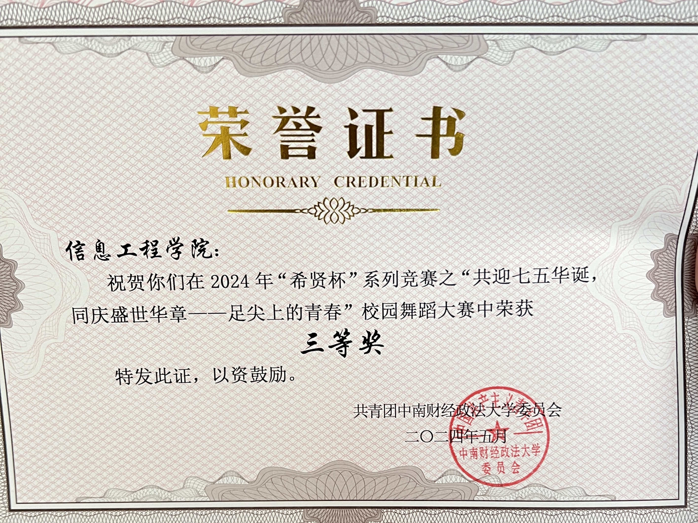
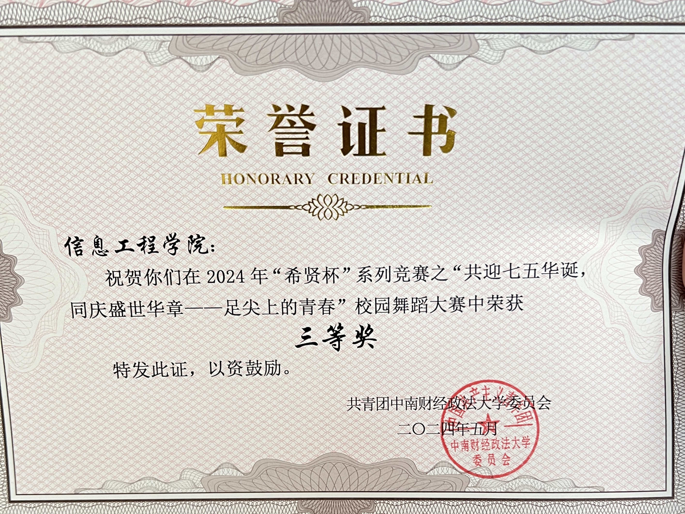

该项目基于知识图谱和BERT算法，通过实时捕捉学生的学习知识情况，根据学生的知识点掌握水平， 并结合知识点间的相关度推荐出适合其知识掌握水平难度的试题来解决知识漏洞问题； 作为主要成员，我运用多学科知识交叉融合，整理撰写了项目创新突破点、用户数据动态收集部分以及流程图绘制等内容
 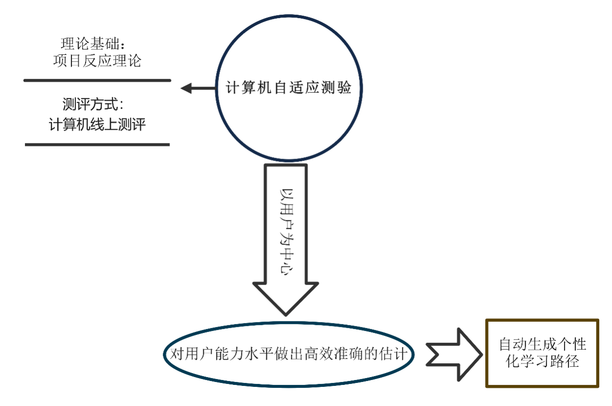
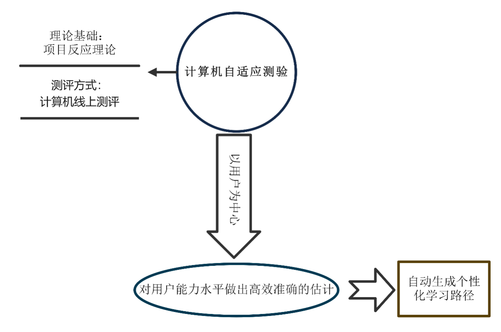
该项目致力于基于计算机视觉技术、人工智能算法、深度学习算法、高精度定位技术，打造出一套监狱智能化监保一体系统， 运用骨骼关键点人体动作识别技术和多种高精度定位技术，提升监舍的管理效率和安全性，赋能监狱管理理念和管理模式的创新； 在本项目中，我负责整合本项目中的所有技术部分，详细介绍了该系统的运作流程以及落地方案
该项目的研究主要聚焦于在政策层面，拟从政策制定与实施两个方面分析政策工具对农户绿色转型的激励作用与影响机制， 项目主要包括对政策雨季里的指标构建、相关性分析以及对实地调研的数据进行质性分析三个步骤； 在本项目中我对国内外在绿色发展、农户绿色转型以及政策工具等方面的研究做了详细的文献综述，并撰写了项目书中基于NLP的访谈文本相关性分析部分， 绘制和美化了项目书中的PMC曲面图和流程图
该项目秉持着“讲好家乡故事，做好家乡宣传，实现全球传播”的核心理念，鼓励大学生讲好家乡故事，发掘推广家乡小众景点， 提供特产售卖和互换平台，旨在搭建一个全球性的大学生文化社交和电商平台； 在该项目里，我通过与项目负责人和其他主要成员的沟通交流，确定了本项目的业务需求，并为本项目设计了一套UI界面
 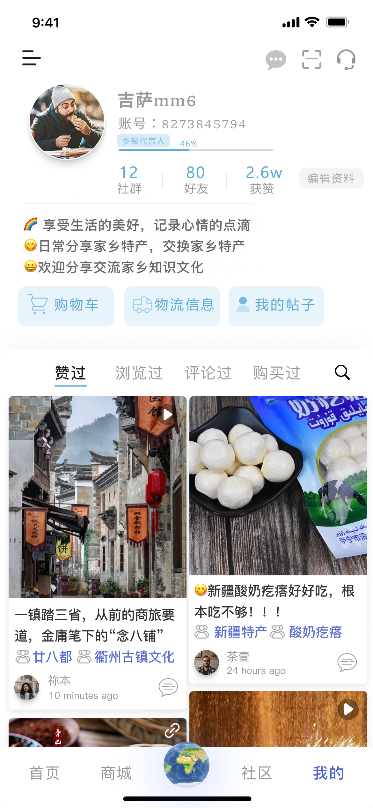
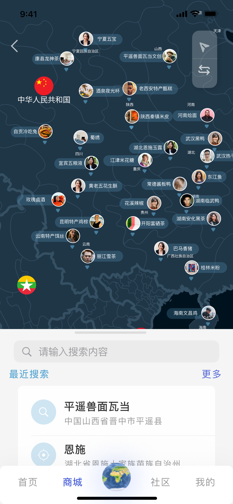
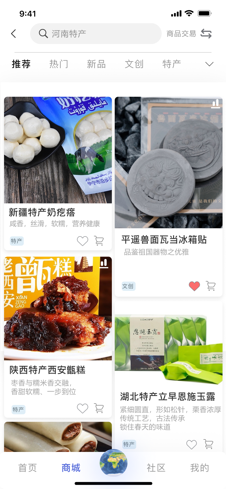
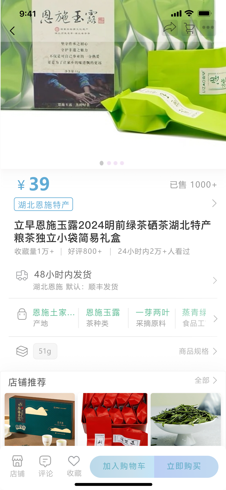
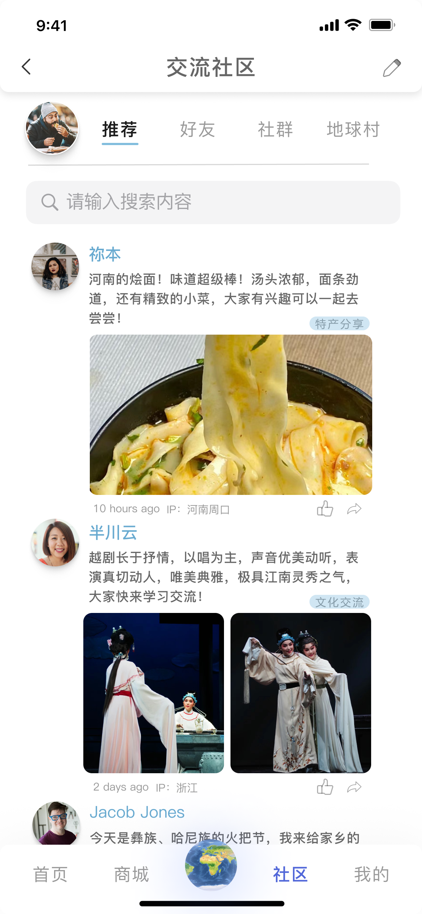
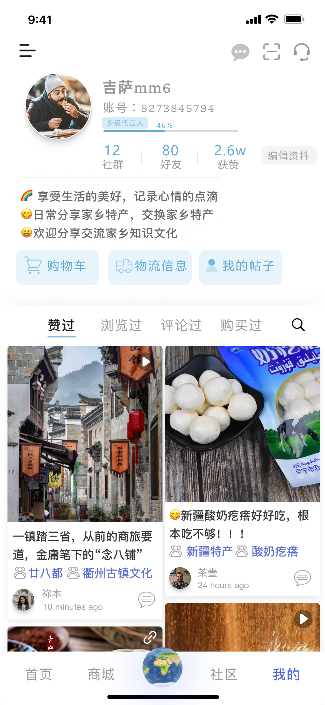
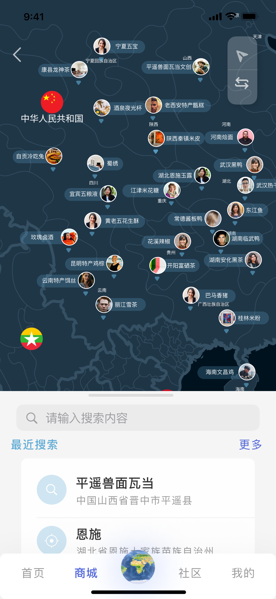
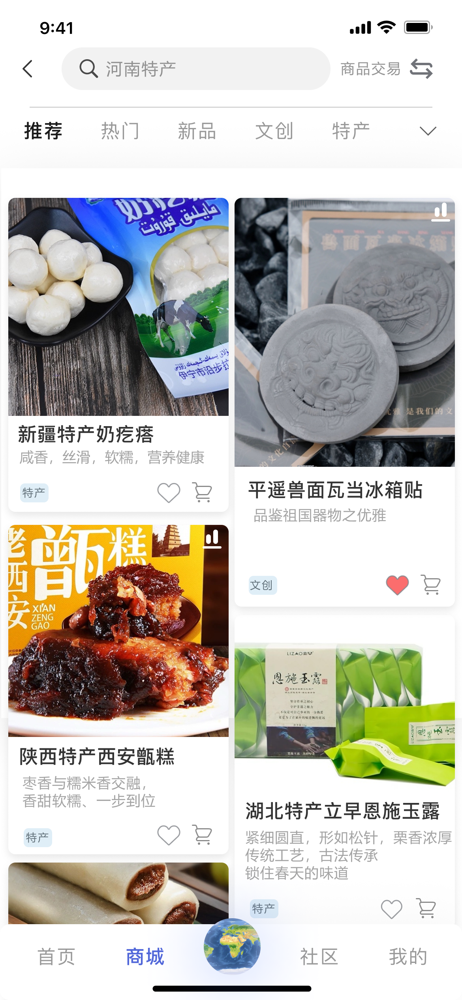
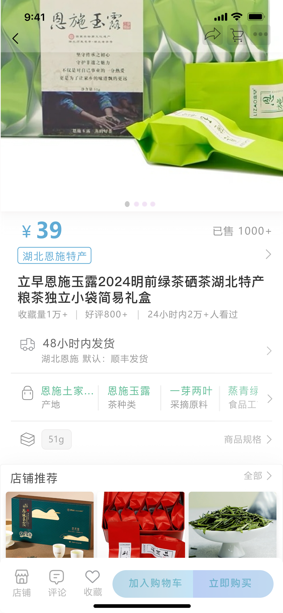
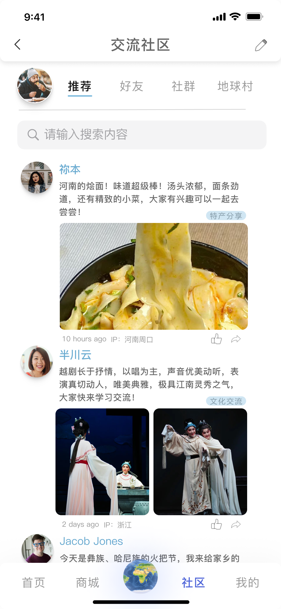
该项目率先提出国内首个数据交易应用场景智能化评估定价平台，以“安心交易，放心收益”为宗旨， 聚焦于数据在不同场景中发挥出的价值，进行动态定价； 在本项目中我负责了基于Shapley值对数据的效用进行定价的技术撰写， 并对数据交易的现有市场、痛点以及竞品进行了详细分析
该项目拟打造一款智能化衣橱管理推荐APP，为用户提供精密化、个性化的掌上衣橱，在实现用户衣物资源化管理的同时， 结合多元要素为用户个性化推荐穿搭方案，并通过3D虚拟人呈现用户的真实穿搭效果； 作为主要成员/负责人，我主要撰写了基于DRCNN（Dynamic Routing Convolutional Neural Network）的3D衣物识别的技术部分， 提供了基于KRMVC的用户偏好获取技术论文，并绘制了项目APP的工作流程图以及平台介绍海报
——分别获得2023年“希贤杯”系列竞赛之校园舞蹈大赛优秀奖 、 2024年“希贤杯”系列竞赛之校园舞蹈大赛三等奖（学院第二次获奖）


本小组选择了重塑美护发服务：打造增强型技术（如AI、AR、大数据应用等）， 帮助专业人士更精准地诊断并预测消费者需求这一赛道，基于海量美发数据和用户个人数据针对性推荐适合用户的发型，以及 适合用户的欧莱雅系列产品，并为用户举行大型线上美发沙龙，促进审美交融； 作为小组主要成员，我贡献了部分创新思路，并制作了参赛的视频作品
大二上第一次接触散打（体育专项）课程，大二下要求报名参与第十七届武术散打比赛； 在整个活动赛程中，我参与了四轮比赛，并在第三轮时成功晋级八强